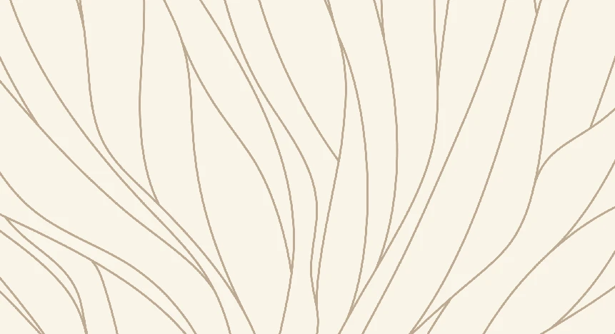
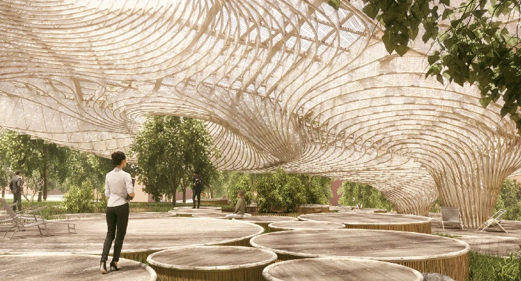

01Fungi
MYCELIUM / CONNECTION / RESILIENCE
The network that supports us.
The fine network of mycelium is a metaphor for the bonds between children, educators and families. Individual growth is supported by a community that shares ideas, resources and experiences.


TRANSLATING NATURE INTO DESIGN
Fine, branching lines form intricate networks. Linen and Boy Red tones express rootedness and growth.
Palette / Fungi
HOW IT TAKES SHAPE AT HPL
Within the HPL world, these connections appear in learning materials and in spaces that bring people together.